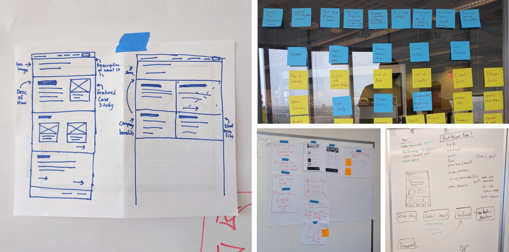
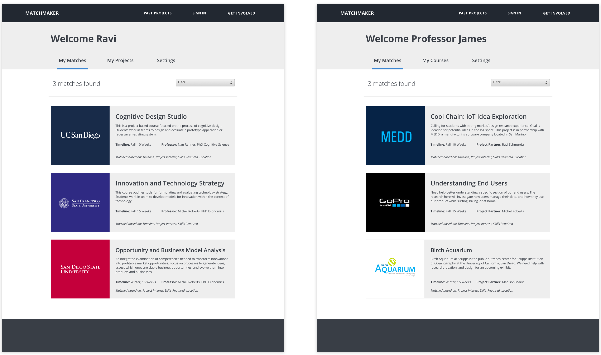
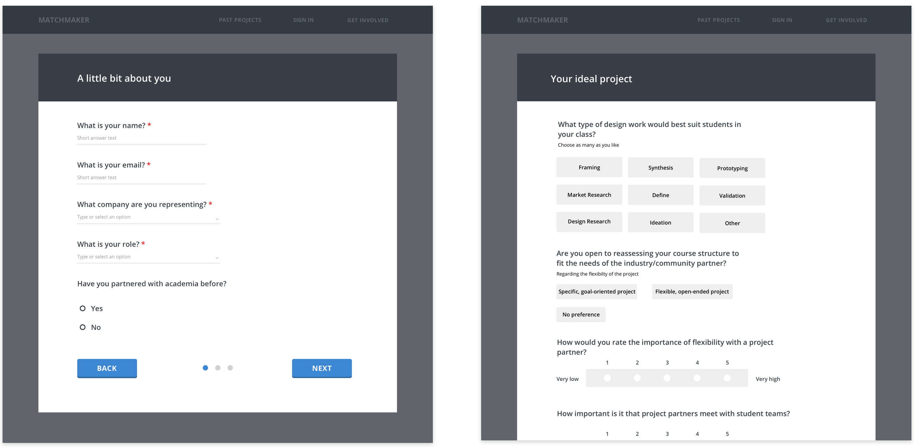
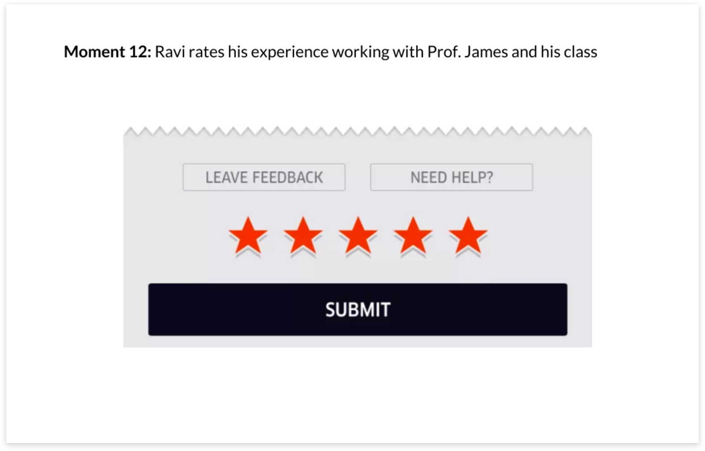

Matchmaker
Made for: SAP and the Design Lab
Time: 3.5 months
Tools: Sketch, Invision
Challenge:
How might we better prepare students for the needs of tomorrow by reimagining higher education?
Solution:
We propose Matchmaker, a system that matches design-led courses with real-world problems for students to work on.
My Role
I collaborated with SAP designers on behalf of the design lab to conceptualize a platform that matches educators and classes to real world projects. I conducted competitive analysis, made wireframes, and designed an interactive storyboard prototype to communicate the idea behind the Matchmaker.
Context
Since 2015, SAP's design team has been researching the education space, which ultimately led them to partner with the Design Lab. After conducting extensive research at 6 different colleges and with over 20 professors, SAP came to the following fundamental insight:
"Students are coming out of university unprepared for the challenges of the workforce"
This journey map depicts the typical college experience:

Curious about what was currently being done to address this problem, we conducted a competitive analysis:

We learned that:
1. Project-based courses are crucial for applying knowledge to labor, however, they are confined to the university bubble.
2. The emergence of hackathons and industry-focused clubs show that students are aware of the issue, however, this is not enough to solve it.
3. Schools that host capstone courses, where students can work on corporate sponsored projects have an advantage, however, these programs are limited.
Reframing the problem and rapidly prototyping ideas

We wondered, what's stopping educators from connecting with companies or local community origanizations to introduce real-world projects into their classrooms? So, we quickly storyboarded this concept and presented it to professors to get their input.
These are the main insights we got:
Working with industry is tricky; educators don't want their students to be seen as free labor
Successful engagements with industry involve alumni that the educators already trust
To make it work, educators would need freedom in reframing the "industry problem" into a "teaching problem"
With this in mind, we iterated our idea.
Using the Jobs to be Done framework to design features
We created 3 higher level personas based upon the people we had interviewed. However, we recognized problems with guiding our design solely based on personas. It is easy for personas to become collages of random user demographics which don’t situate the user needs within a context.
We opted to use a "jobs to be done” framework to design the features of our concept. Each job to be done follows this pattern:
When ________ I want to ________ so I can _________.
By framing stories in this manner, we get context about the situation (When), the user’s motive(I want to), and the expected outcome(so I can), which was crucial for our design reasoning.
I wireframed the platform using pen and paper and created a high fidelity prototype with Sketch and Invision.

Key digital moments include:

Automatic matching between client and classroom based on mutual interest, flexibility, and commitment levels

Templates to make negotiation and communication easier

Uber-like rating system to keep people accountable and lower barriers of entry for new users
Presenting to users
The culmination of our work ended in a 3 day intensive workshop led by SAP’s design team. We gathered over 20 design educators from various colleges to come and share their experiences. My team did a wall walk with them and had them comment on every stage of the storyboard with post-its.

Click here to see one of the storyboards we presented!